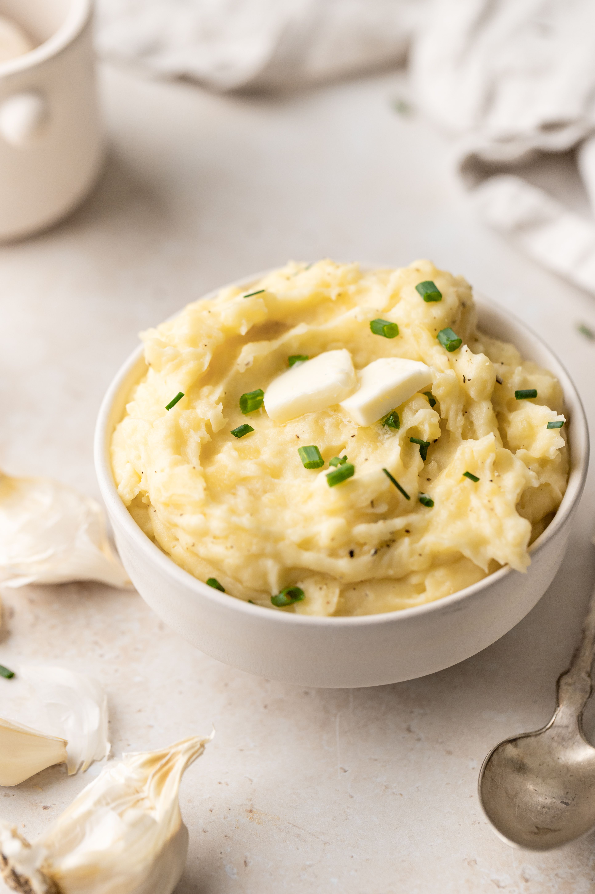

Mashed Potatoes

Ingredients:
- 4 lb Idaho® Gold Potatoes, peeled and cut into 1-inch cubes
- ½ cup (1 stick) unsalted butter, melted
- 1 cup heavy cream
- 2 fresh rosemary sprigs
- 1 fresh thyme sprig
- 1 fresh sage sprig
- 1 garlic head, cut in half widthwise
- kosher salt, to taste
- freshly ground black pepper, to taste
Steps:
- Add the potatoes to a large pot of cold water, along with 2 teaspoons of kosher salt. Bring to a boil over high heat, then reduce the heat to low and simmer for about 12 minutes, until the potatoes are fork-tender.
- Drain the potatoes in a colander, then return to the pot. Increase the heat to medium-high and stir the potatoes around for 2-3 minutes to evaporate any excess moisture.
- Transfer the potatoes to a large bowl and mash with a potato masher, potato ricer, or by pushing through a fine mesh sieve with a spatula.
- In a small saucepan, combine the heavy cream, rosemary, and garlic. Bring to a simmer over low heat, let cook for 2-3 minutes, until cream is infused. Remove the pot from the heat and strain through a fine mesh sieve.
- Add the cream mixture and melted butter to the potatoes and stir to incorporate, then season with salt to taste.
- Top with gravy and freshly ground black pepper, and serve warm.
- Enjoy!